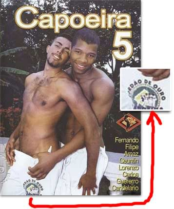

Каподайджест, №1 (14.05)
Решил, что все интересные находки и новости, связанные с капуэйрой и бразильской культурой вообще, буду публиковать в виде еженедельного дайжеста. Посмотрим на сколько меня хватит, а вы, тем временем, можете присылать свои ссылки мне в личку.
***
В этом выпуске:
- Подборка жесткача и красивых моментов от группы Muzenza
- В Бразилии узаконили однополые гражданские союзы
- Коллекция сказок португалоговорящих стран
- Музыкальные вступления и вариации в капуэйре
Best of Muzenza: подборка жесткача и красивых моментов от группы Muzenza
На форуме Capoeira.com появилась подборка трёх видео под заголовком «Some Of The BEST CAPOEIRA Videos EVER!» („Одни из самых лучших видеороликов капуэйры“). На всех роликах показаны «лучшие моменты» из игр, род и соревнований группы Muzenza. Впрочем, многие пользователи форума не согласны с определением «лучшее видео» и начали выкладывать ссылки на свои любимые игры.
Вторую и третию часть серии можно посмотреть на YouTube.
В Бразилии узаконили однополые гражданские союзы

(NOT GAY!) Верховный федеральный суд Бразилии признал законными однополые гражданские союзы, пишет Корреспондент.net.
Согласно решению суда, для однополых пар предусмотрены практически все права, которыми обладают партнеры традиционной ориентации, в том числе и право на пенсионное пособие, наследство, а также, как считает ряд юристов, право на усыновление детей, передает Reuters.
Из 11 судей верховного федерального суда Бразилии десять проголосовали за признание однополых союзов, один воздержался.
Таким образом, как отмечает агентство, Бразилия стала второй страной в Латинской Америке после Аргентины, где были разрешены однополые гражданские союзы.
Falar.ru опубликовал коллекцию сказок португалоговорящих стран
Известный в рунете сайт о португальском языке Falar.ru подготовил коллекцию, в которой собраны наиболее популярные ангольские, мозамбикские, бразильские и португальские народные сказки, переведённые с португальского языка на русский.
Видео от Soul Capoeira: музыкальные вступления в капуэйре
Популярный своими статьями и видео-пособиями блог Soul Capoeira опубликовал новое интересное видео. На этот раз зрителям предлагается изучить несколько видов вступлений (entradas) второстепенных инструментов в батейрии, чтобы разнообразить музыку и научиться импровизировать. На видео показаны вариации вступления второго беримбау, пандейру, атабаки и агого.
Возможно вы пропустили
- Слова и история песни Camaradinha
- Aruanda – документальный фильм о капуэйре и местре Poncianinho
- Beautiful Capoeira app — приложение для iPhone и iPod touch